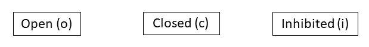
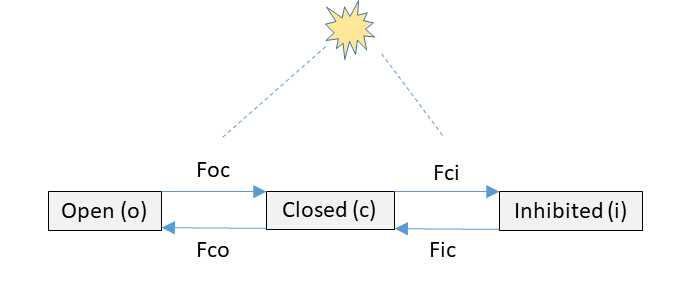

Tutorial
You are advised to watch the following video first.
Video timeline
- 0:00 Introduction
- 0:25 The mass balance equation
- 2:07 Example 1: Simple model of N flow in a lake system
- 4:23 Consistency check
- 5:46 Check of units
- 7:12 Example 2: Enhanced model of N flow in a lake system
- 9:04 Note about benthic-pelagic coupling
- 11:15 Chemical reactions
- 12:40 Example 3: organic matter degradation
- 15:09 Summary
You can also read the following section(s) of the textbook:
- Chapter 2.1. Conceptual model
(You can download each chapter of the textbook via the e-book University library for free!)
Mass balance of a lake ecosystem
Consider the conceptual diagram of a simple lake ecosystem model shown below. The state variables represent nitrogen (N) concentrations in the major lake compartments. Each state variable is in moles of N per cubic meter of water column (\(mol~N~m^{-3}\)), each flux is in moles of N per cubic meter of water column per day (\(mol~N~m^{-3}~d^{-1}\)), water column height is \(h = 10~m\).

Enhanced lake ecosystem
Consider the conceptual diagram of an enhanced lake ecosystem model shown below. The state variables represent nitrogen (N) concentrations in the major lake compartments. Each state variable except for the BOTTOM_DETRITUS is in moles of N per cubic meter of water column, each flux except for F12, F13 and F14 is in moles of N per cubic meter of water column per day. The new state variable BOTTOM_DETRITUS is in moles of N per square meter of lake bottom, the new fluxes F12, F13 and F14 are in moles of N per square meter of lake bottom per day, water column height is \(h = 10~m\).

Biogeochemical reaction
Consider organic matter (OM) mineralization in a water column. Under anoxic conditions (no \(O_2\) available), OM can be mineralized with nitrate (\(NO_3^-\)) as the electron acceptor (Denitrification). The corresponding stoichiometry of the reaction is given by the equation below, where 16/106 corresponds to the Redfield (molar) ratio of C:N in OM.
\[ 5CH_2O(NH_3)_{16/106}+4NO_3^-+4H^+ \rightarrow 5CO_2+7H_2O+2N_2+5(NH3)_{16/106} \]
- Assume that the rate of OM mineralization is \(R\), in units of \(mol~C~m^{-3}~h^{-1}\).
- Concentrations of OM and \(CO_2\) are in \(mol~C~m^{-3}\), concentrations of nitrate and ammonia are in \(mol~N~m^{-3}\), and the concentration of dissolved \(N_2\) gas is in \(mol~N_2~m^{-3}\), where \(m^3\) refers to the cubic meter of water column. Assume that OM mineralization is the only process in the system.
\[ 5CH_2O(NH_3)_{16/106}+4NO_3^-+4H^+ \rightarrow 5CO_2+7H_2O+2N_2+5(NH3)_{16/106} \]
Photosynthesis - conceptual model
Oxygenic photosynthesis (oxy-PS) is a process used by plants, algae and cyanobacteria to convert light energy into chemical energy stored in carbohydrates. In this process, enzymes comprising the photosystems I and II capture photons, which energize electrons and ultimately produce NADPH (the source of a proton) and ATP (chemical energy). These two components are then used in the Calvin cycle to convert \(CO_2\) into carbohydrates.
A simple representation of the PSI+PSII system considers three states:
- an open (or reactive) state,
- a closed (or activated) state, and
- an inhibited state.
After being hit by photons, the PSI+PSII system transits from an open state to a closed one. The excited electrons are then transferred to the terminal electron acceptors, and the PSI+PSII system returns to the open state. Excessive absorption of light leads to photo-inhibition, that shifts the system from the closed to the inhibited state, from which it slowly recovers back to the closed state.

In the scheme above, you find the three states that are used in this PSI+PSII model. Based on the above description, draw the arrows that represent the transitions from each state to the other state. If we define with Fab the transition rate from state a to b, then tick the boxes that should be added in this conceptual scheme:
Photosynthesis - mass balance
You are given the following conceptual diagram of the PSI+PSII model. 
- Write the mass balance equations for the state variables [o], [c] and [i]:
Photosynthesis - units
- The state variables [o], [c], and [i] are fractions that sum to 1 (i.e., they are unitless).
- The rate expression for \(F_{ic}\) is \[F_{ic} = r \cdot [i]\]
- The rate expression for \(F_{oc}\) is equal to \[F_{oc} =\sigma \cdot I \cdot [o],\] where the unit of \(I\) (light intensity) is \(\mu mol~photons~m^{-2}~s^{-1}\).
More exercises
More exercises on creating mass balance equations can be found in the R-package RTM. Type the following commands in the R console to see these exercises:
require(RTM)
RTMexercise("massbalance")Finally
References
See https://en.wikipedia.org/wiki/Photosynthesis for more details about photosynthesis.
Karline Soetaert, Peter M.J. Herman (2009). A Practical Guide to Ecological Modelling. Springer Netherlands. DOI: 10.1007/978-1-4020-8624-3.